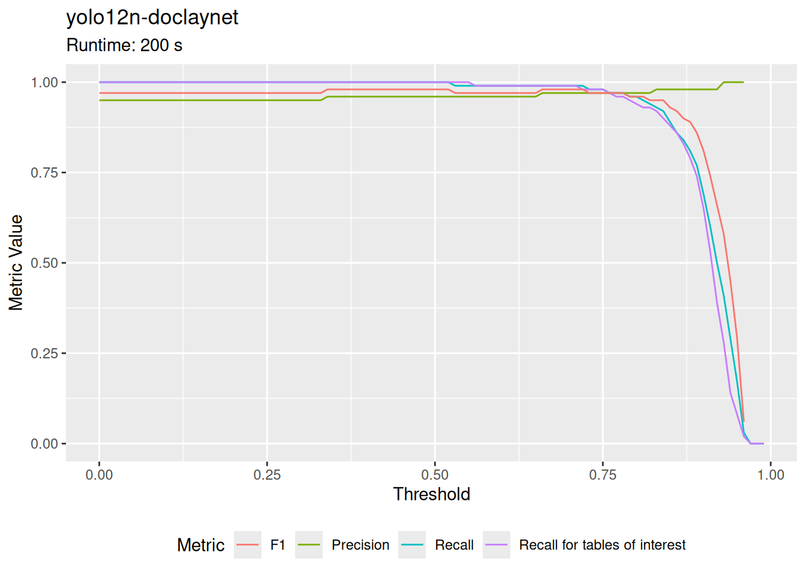
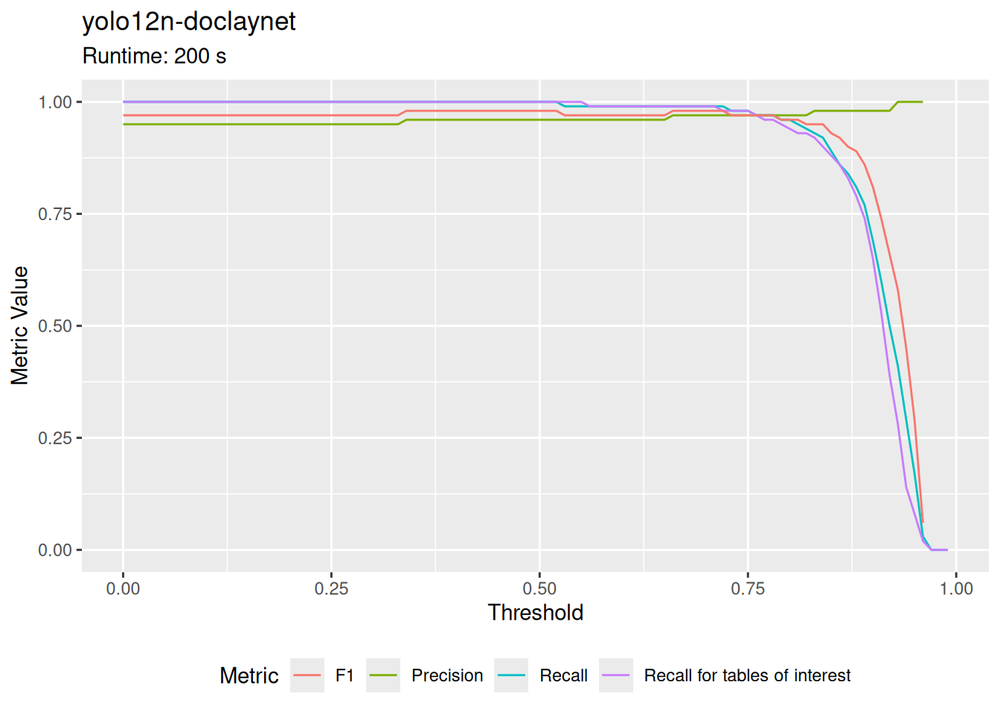
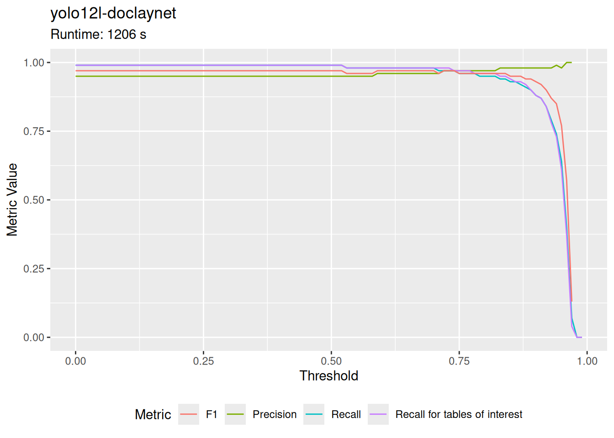
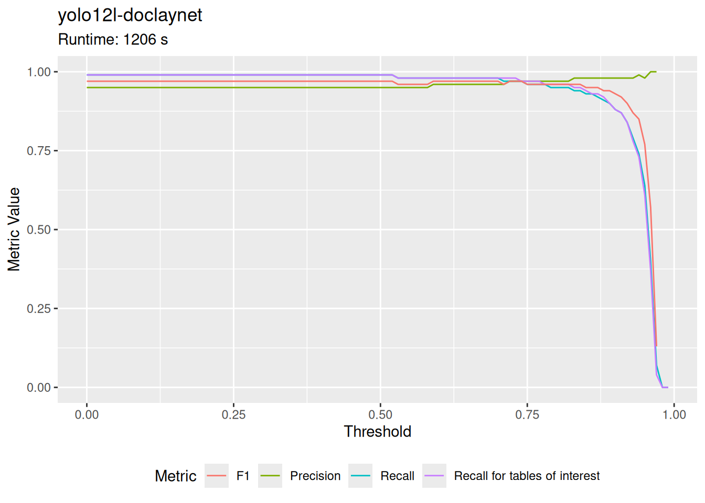

8 Appendix
8.1 Local machine
One can find the specifications of the local machine used to run the less computationally demanding tasks below. It is a lightweight laptop device. Its performance cores support hyperthreading and have a clock range between 2.1 and 4.7 GHz. However, due to the flat design, there is little active cooling. Thus, thermal throttling starts rather quickly. It is therefore a reasonable assumption that most locally benchmarked tasks are running at 2.1 GHz. Despite this handicap, it has a sufficiently large RAM of 32 GB and 3 GB of NVMe disk space.
8.2 Benchmarks
8.2.1 Text extraction
Code
data_text_extraction <- read.csv("../benchmark_results/text_extraction_benchmark_results.csv") %>%
arrange(runtime) %>%
rename("package" = "pdfbackend", "runtime in s" = "runtime")
# Find the lowest value in the "runtime in s" column and make it bold
data_text_extraction <- data_text_extraction %>%
mutate(
`runtime in s` = round(`runtime in s`, 0), # Ensure the column is numeric
`runtime in s` = ifelse(
`runtime in s` == min(`runtime in s`, na.rm = TRUE),
paste0("**", `runtime in s`, "**"),
`runtime in s`
)
)A basic requirement for all succeeding tasks is, that the text gets extracted from the PDF files. As written in doclings technical report (Auer et al., 2024) the available open source libraries differ in their speed and restrictiveness of licensing. Since there are no benchmark results this report multiple libraries have been tested here.
The benchmark ran on the local machine described in section 8.1. There have been 5256 pages to extract the text from.
Code
The result of docling-parse is not formated as markdown yet but also just plain text.
For implementation in a system where the text has to get extracted live or frequently the speed of the library might be paramount. But in special cases it can be important to invest more computational power into text extraction if this assures extraction according a more complicated document layout. E.g. some of the tables have been parsed by pdfium in such a manner that first all row descriptors have been extracted (first row) and thereafter all numeric columns (rowwise) ADD REFERENCE / EXAMPLE.
8.2.2 Table detection
Code
# Get a list of all .json files in the folder
json_files_table_detection <- list.files("../benchmark_results/table_detection/", pattern = "\\.json$", full.names = TRUE)
meta_list <- list()
# Loop through each .json file
for (file in json_files_table_detection) {
# Read the JSON file
json_data <- fromJSON(file)
# Extract the threshold and metrics from the "metrics" key
metrics <- as.data.frame(fromJSON(json_data$metrics))
lst <- list(
metrics = metrics,
model = basename(file),
runtime = json_data$runtime
)
meta_list[[length(meta_list) + 1]] <- lst
}
# Plot the metrics over threshold
metric_plots <- list()
for (result in meta_list) {
table_detection_plot <- ggplot(result$metrics, aes(x = threshold)) +
geom_line(aes(y = precision, color = "Precision")) +
geom_line(aes(y = recall, color = "Recall")) +
geom_line(aes(y = recall_target, color = "Recall for tables of interest")) +
geom_line(aes(y = F1, color = "F1")) +
labs(
title = str_replace(result$model, ".json", ""),
subtitle = paste("Runtime:", round(result$runtime, 0) , "s"),
x = "Threshold",
y = "Metric Value",
color = "Metric"
) +
# theme_minimal() +
theme(legend.position = "bottom")
metric_plots[[length(metric_plots) + 1]] <- list(image = table_detection_plot, title = str_replace(result$model, ".json", ""))
}
json_files_table_detection_llm <- list.files("../benchmark_results/table_detection/llm/", pattern = "\\.json$", full.names = TRUE)
meta_list_llm <- list()
# Loop through each .json file
for (file in json_files_table_detection_llm) {
# Read the JSON file
json_data <- fromJSON(file)
# Extract the threshold and metrics from the "metrics" key
metrics <- as.data.frame(json_data$metrics)
lst <- list(
metrics = metrics,
model = basename(file),
runtime = json_data$runtime
)
meta_list_llm[[length(meta_list_llm) + 1]] <- lst
}
results_df_llm <- data.frame(
llm = character(),
parameters = character(),
method = character(),
loop = numeric(),
# acc = numeric(),
# precision = numeric(),
# recall = numeric(),
F1_Aktiva = numeric(),
runtime_in_s = numeric(),
stringsAsFactors = FALSE
)
for (result in meta_list_llm) {
name_split = result$model %>% str_split("__")
name_split = name_split[[1]]
llm = name_split[1]
parameters = str_extract(llm, "\\d*\\.?\\d+B")
method = name_split[length(name_split)-1]
loop = name_split[length(name_split)] %>% str_remove(".json") %>% str_remove("loop_") %>% as.integer()
F1_Aktiva = result$metrics$Aktiva.f1_score
runtime = result$runtime
results_df_llm <- results_df_llm %>%
add_row(
llm = llm,
parameters = parameters,
method = method,
loop = loop,
# acc = acc,
# precision = precision,
# recall = recall,
F1_Aktiva = F1_Aktiva, #round(F1_Aktiva, 2),
runtime_in_s = round(runtime, 2)
)
}- yolo benchmark and table transformer
- skip classification with llm
not so important anymore
Code
 You see the plot for: microsoft-table-transformer-detection.
(Click to stop automatic rotation.)
You see the plot for: microsoft-table-transformer-detection.
(Click to stop automatic rotation.) You see the plot for: yolo12l-doclaynet.
(Click to stop automatic rotation.)You see the plot for: yolo12n-doclaynet.
(Click to stop automatic rotation.)
You see the plot for: yolo12l-doclaynet.
(Click to stop automatic rotation.)You see the plot for: yolo12n-doclaynet.
(Click to stop automatic rotation.)
Code
 microsoft-table-transformer-detectionyolo12l-doclaynet
microsoft-table-transformer-detectionyolo12l-doclaynet yolo12n-doclaynet
yolo12n-doclaynet
Code
8.2.3 Large language model process speed
In April 2025 there have been issues with running vllm within the Python framework. Thus the first experiments have been conducted using the transformers library. When the problems of building a working vllm based docker image for the experiments it was measured how long the same task takes with the transformers and the vllm library and how the batched processing competes versus a loop approach. The model family used was Qwen 2.5 Instruct. The task was to extract the assets table for ten real example pages.
Table 8.3 shows that the experiments with vllm library run are around four to five times faster. Processing the messages in a batched mode again is six to seven times faster.
The change of the experimental setup from transformers loop-based to vllm batched mode made is possible run the benchmark on whole PDF documents giving a sound estimate of the false positive rate in the page identification task (see section 5.1.3). Previous experiments have only been using a subset of pages that have been selected with the baseline regex approach (see section 5.1.1).
Code
data_llm_speed <- data.frame(
# model = c("Qwen 2.5 Instruct"),
parameters = c(0.5, 3, 7),
transformers = c(330, 628, 940),
vllm = c(65, 130, 217),
vllm_batched = c(NA, 20, 30)
) %>% setNames(c("Model parameters (in B)", "Transformers", "vLLM", "vLLM batched"))
knitr::kable(data_llm_speed, caption = "Comparing time (in seconds) for processing ten asset tables using different libraries and approaches")| Model parameters (in B) | Transformers | vLLM | vLLM batched |
|---|---|---|---|
| 0.5 | 330 | 65 | NA |
| 3.0 | 628 | 130 | 20 |
| 7.0 | 940 | 217 | 30 |
8.3 Prompts
8.3.1 TOC understanding
Base prompt:
Code
messages = [
{"role": "system", "content": "You are a helpful assistant that can determine the page range information in a German financial report can be found at based on the documents table of contents."},
{"role": "user", "content": f"This is the table of contents:\n\n{toc_string}"},
{"role": "user", "content": f"On which pages might the win and loss statement (in German: Gewinn- und Verlustrechnung; GuV) and the balance sheets (German: Bilanz) be located? Give seperate answers for:\n\n1) the assets (German: Aktiva) table.\n2) the liabilities (German: Passiva) table.\n3) the win and loss statement."},
specific_prompt,
{"role": "user", "content": f"Answer in JSON format with keys 'GuV', 'Aktiva', and 'Passiva' and the page range as values."},
]First attempt:
Code
Given hint that assets and liabilities are part of the balance sheet:
Code
specific_prompt = {"role": "user", "content": f"The assets and liabilities are part of the balance sheet (in German: Bilanz). The assets and liabilities tables often are on separate pages. They are often located directly before the win and loss statement. Rarely the tables for any of the three can span multiple pages."}Stating, that liabilities are on next page:
Code
specific_prompt = {"role": "user", "content": f"The assets and liabilities are part of the balance sheet (in German: Bilanz). The liabilities table is often on the page after the assets table. They are often located directly before the win and loss statement. Rarely the tables for any of the three can span multiple pages."}TOC extraction from text prompt:
Code
messages = [
{"role": "system", "content": "[Role] You are a helpful assistant that can identify table of contents in a German financial report."},
{"role": "system", "content": f"[Context] These are the text lines of the first {i} pages:\n\n{start_pages}"},
{"role": "user", "content": f"[Tasks] 1. Please identify if there is a table of contents in the text."},
{"role": "user", "content": f"2. If there is a table of contents, please extract its text."},
{"role": "user", "content": f"3. Answer as JSON with the table of contents text as string in the key 'toc'."},
{"role": "user", "content": f"If there is no table of contents, return an empty string."},
]8.3.2 Classification
binary classification prompt factory
Code
messages = [{"role": "system", "content": "[Role and Context]: You are a helpful assistant that can classify texts extracted from PDFs."}]
if law_context:
if classification_type == "GuV":
messages.append({"role": "system", "content": f"You know the laws about how to structure the 'Gewinn- und Verlustrechnung' (profit and loss statement) table:' \n\n'''\n{hgb_guv}\n'''."})
elif classification_type == "Aktiva":
messages.append({"role": "system", "content": f"You know the laws about how to structure the 'Aktiva' (assets) table for a 'Bilanz' (balance sheet):' \n\n'''\n{hgb_aktiva}\n'''."})
elif classification_type == "Passiva":
messages.append({"role": "system", "content": f"You know the laws about how to structure the 'Passiva' (liabilities) table for a 'Bilanz' (balance sheet):' \n\n'''\n{hgb_passiva}\n'''."})
else:
raise ValueError(f"Unknown classification type: {classification_type}. Expected 'GuV', 'Aktiva', or 'Passiva'.")
if random_examples:
system_messages = self.__get_random_example_message(classification_type, **kwargs)
for msg in system_messages:
messages.append({"role": "system", "content": msg})
if rag_examples:
system_messages = self.__get_rag_example_message(text, classification_type, **kwargs)
for msg in system_messages:
messages.append({"role": "system", "content": msg})
if top_n_rag_examples:
system_messages = self.__get_top_n_rag_example_message(text, classification_type, **kwargs)
for msg in system_messages:
messages.append({"role": "system", "content": msg})
messages.append({"role": "user", "content": f"[Task]: Decide if the given text contains {phrase_dict[classification_type]}.\n\n[Rule]: Answer with 'yes' if it does. Otherwise answer with 'no'.\n\n[Text]: Here is the text to classify: \n\n'''\n{text}\n'''"})
return messagesexample for binary classification with 1 random example with Qwen 3
<|im_start|>system
/no_think [Role and Context]: You are a helpful assistant that can classify texts extracted from PDFs.<|im_end|>
<|im_start|>system
You know this example for a \'Gewinn- und Verlustrechnung\' (profit and loss statement) table and for this example you should answer with "no":
\'\'\'
28
2023
EUR
2022
EUR
EUR EUR
1. Umsatzerlöse 1.315.073,26 1.507.621,05
2. Sonstige betriebliche Erträge 562.644,72 631.803,96
3. Materialaufwand -388.989,26 -98.471,89
4. Abschreibungen -447.356,00 -460.923,00
5. Sonstige betriebliche Aufwendungen -907.414,53 -2.304.390,53
6. Sonstige Zinsen und ähnliche Erträge 95.260,94 -2.533,45
7. Ergebnis nach Steuern 229.219,13 -726.893,86
8. Sonstige Steuern -857.535,62 -879.289,10
9. Jahresfehlbetrag -628.316,49 -1.606.182,96
Gewinn- und Verlustrechnung
für die Zeit vom 01. Januar bis 31. Dezember 2023
\'\'\'.<|im_end|>
<|im_start|>system
You know this example for a \'Aktiva\' (assets) table and for this example you should answer with "yes":
\'\'\'
BEN Berlin Energie und Netzholding GmbH (vormals: Berlin Energie Rekom 2 GmbH)
Berlin
Bilanz zum 31.12.2021
Aktivseite 31.12.2021 31.12.2020 31.12.2021 31.12.2020
T€ T€ T€ T€
A. Anlagevermögen A. Eigenkapital
imv I. Immaterielle Vermögensgegenstände 0,8 - ek I. Gezeichnetes Kapital 25,0 25,0
bga II. Sachanlagen 73,1 - kr II. Kapitalrücklage 6,9 6,9
III. Finanzanlagen 2.094.146,0 - vv III. Verlustvortrag - 6,9 - 6,9
IV. Jahresüberschuss 1.326,7 -
2.094.219,9 -
1.351,7 25,0
B. Umlaufvermögen sor
unf I. Forderungen und sonstige B. Rückstellungen
Vermögensgegenstände Sonstige Rückstellungen 265,1 6,7
Forderungen gegen verbundene
Unternehmen 423,1 - anzC. Verbindlichkeiten
1. Verbindlichkeiten gegenüber
fll II. Guthaben bei Kreditinstituten 166.662,0 39,2 vll Kreditinstituten 2.180.051,3 -
2. Verbindlichkeiten aus
167.085,1 39,2 Lieferungen und Leistungen 91,9 1,9
3. Verbindlichkeiten gegenüber
verbundenen Unternehmen 81.286,7 -
C. Rechnungsabgrenzungsposten 2.471,2 - vvu 4. Verbindlichkeiten gegenüber
Gesellschaftern 713,9 5,6
5. Sonstige Verbindlichkeiten 15,6 -
2.262.159,4 7,5
2.263.776,2 39,2 2.263.776,2 39,2
Passivseite
21-006917
\'\'\'.<|im_end|>
<|im_start|>system
You know this example for a \'Passiva\' (liabilities) table and for this example you should answer with "no":
\'\'\'
4
Bilanz Elektrizitätsverteilung
Aktiva 31.12.2022
T€
Anlagevermögen
imv Immaterielle Vermögensgegenstände -
bga Sachanlagen -
Finanzanlagen -
-
Umlaufvermögen
unf Forderungen und sonstige Vermögensgegenstände 329,6
davon Verrechnungsposten gegenüber anderen Aktivitäten 289,9
fll Guthaben bei Kreditinstituten -
329,6
Rechnungsabgrenzungsposten 17,9
347,6
Passiva 31.12.2022
T€
Eigenkapital
ek Gezeichnetes Kapital -
kr Kapitalrücklage -
vv Gewinnrücklage/Verlustvortrag -
Jahresüberschuss 0,1
0,1
Rückstellungen
Sonstige Rückstellungen 258,4
Verbindlichkeiten
anz Verbindlichkeiten gegenüber Kreditinstituten -
vll Verbindlichkeiten aus Lieferungen und Leistungen 89,0
Verbindlichkeiten gegenüber Gesellschaftern -
Sonstige Verbindlichkeiten -
89,0
347,6
\'\'\'.<|im_end|>
<|im_start|>system
You know this example for a text that does not suit the categories of interest and for this example you should answer with "no":
\'\'\'
Bericht des
Aufsichtsrates
Sehr geehrte Damen,
sehr geehrte Herren,
mit diesem Bericht informieren wir über unsere Tätigkeit im Geschäftsjahr 2016
und das Ergebnis der Prüfung des Jahresabschlusses. Die uns nach Gesetz, Satzung
und Geschäftsordnung obliegenden Kontroll- und Beratungsaufgaben haben
wir verantwortungsvoll und mit der gebührenden Sorgfalt wahrgenommen. Dabei
haben wir den Vorstand bei der Leitung der GESOBAU beratend begleitet, seine
Tätigkeit überwacht und waren in alle für die Gesellschaft grundlegend bedeutenden
Entscheidungen unmittelbar eingebunden. Der Vorstand ist seinen Informations\x02pflichten uneingeschränkt nachgekommen und hat uns regelmäßig sowohl schrift\x02lich als auch mündlich informiert. Dies geschah zeitnah und umfassend zu allen
Aspekten der Unternehmensplanung, dem Verlauf der Geschäfte, der strategischen
Weiterentwicklung sowie der aktuellen Lage des Unternehmens. Planabweichungen
beim Geschäftsverlauf wurden uns im Einzelnen erläutert und mit schlüssigen
Argumenten begründet. Der Vorstand stimmte die strategische Ausrichtung des
Unternehmens vertrauensvoll mit uns ab. Die für das Unternehmen bedeutenden
Geschäftsvorgänge haben wir auf der Basis der Berichte des Vorstandes ausführlich
erörtert und seinen Beschlussvorschlägen nach gründlicher Prüfung und Beratung
zugestimmt.
Sitzungen
Im Berichtsjahr fanden vier turnusgemäße und eine außerordentliche Sitzung statt.
Die Sitzungen des Aufsichtsrates sind von einem intensiven und offenen Austausch
geprägt. Ein Mitglied des Aufsichtsrates hat im abgelaufenen Geschäftsjahr an
weniger als der Hälfte der Sitzungen teilgenommen. Aufgrund besonderer Eilbe\x02dürftigkeit erfolgten in Abstimmung mit der Vorsitzenden des Aufsichtsrates vier
Beschlussfassungen im Umlaufverfahren.
Die Mitglieder des Aufsichtsrates bereiten sich auf anstehende Beschlüsse regelmäßig
auch anhand von Unterlagen vor, die der Vorstand vorab zur Verfügung stellt. Dabei
wurden sie von den jeweils zuständigen Ausschüssen unterstützt. Die Aufsichtsrats\x02sitzungen werden zudem von den Arbeitnehmervertretern in Gesprächen mit dem
Vorstand vorbereitet.
Information durch den Vorstand
Über die wichtigsten Indikatoren der Geschäftsentwicklung und bestehende Risiken
unterrichtet der Vorstand den Aufsichtsrat anhand schriftlicher Quartalsberichte.
Zwischen den Sitzungsterminen des Aufsichtsrates und seiner Ausschüsse wurde
die Aufsichtsratsvorsitzende ausführlich unterrichtet. Hierbei wurde die Strategie
des Unternehmens besprochen, wie auch die aktuelle Geschäftsentwicklung und
-lage, das Risikomanagement, Fragen der Compliance sowie wesentliche Einzel\x02themen und bevorstehende bedeutsame Entscheidungen erörtert.
16 Perspektiven Bericht des Aufsichtsrates
\'\'\'.<|im_end|>
<|im_start|>user
[Task]: Decide if the given text contains a \'Aktiva\' (assets) table.
[Rule]: Answer with \'yes\' if it does. Otherwise answer with \'no\'.
[Text]: Here is the text to classify:
\'\'\'
22 Amt für Statistik Berlin-Brandenburg | Geschäftsbericht 2014
Amt für Statistik Berlin-Brandenburg Anstalt des öffentlichen Rechts, Potsdam
Bilanz zum 31. Dezember 2014
A K T I V S E I T E 31.12.2014 Vorjahr
EUR EUR TEUR
A. ANLAGEVERMÖGEN
I. Immaterielle Vermögensgegenstände
1. Entgeltlich erworbene Konzessionen, gewerbliche
Schutzrechte und ähnliche Rechte und Werte
sowie Lizenzen an solchen Rechten und Werten 81.480,00 146
II. Sachanlagen
1. Grundstücke, grundstücksgleiche Rechte und Bauten
einschließlich der Bauten auf fremden Grundstücken 68.386,00 93
2. Andere Anlagen, Betriebs- und Geschäftsausstattung 140.186,00 174
208.572,00 267
III. Finanzanlagen
1. Wertpapiere des Anlagevermögens 2.000.000,00 2.000
2.000.000,00 2.000
2.290.052,00 2.413
B. UMLAUFVERMÖGEN
I. Forderungen und sonstige Vermögensgegenstände
1. Forderungen aus Lieferungen und Leistungen 36.617,86 14
2. Sonstige Vermögensgegenstände 297.982,42 267
334.600,28 281
II. Kassenbestand, Bundesbankguthaben, Guthaben bei
Kreditinstituten und Schecks 5.560.638,85 7.783
5.895.239,13 8.064
C. RECHNUNGSABGRENZUNGSPOSTEN 216.321,49 213
8.401.612,62 10.690
Bestätigungsvermerk
des Abschlussprüfers
Anhang
\'\'\'<|im_end|>
<|im_start|>assistantmulti-class classification prompt factory
Code
messages = [
{"role": "system", "content": "[Role and Context]: You are a helpful assistant that can classify texts extracted from PDFs."},
]
if law_context:
messages.append({"role": "system", "content": f"You know the laws about how to structure the 'Gewinn- und Verlustrechnung' (profit and loss statement) table:' \n\n'''\n{hgb_guv}\n'''."})
messages.append({"role": "system", "content": f"You also know the laws about how to structure the 'Aktiva' (assets) and 'Passiva' (liabilities) table for a 'Bilanz' (balance sheet):' \n\n'''\n{hgb_bilanz}\n'''."})
if random_examples:
system_messages = self.__get_random_example_message(**kwargs)
for msg in system_messages:
messages.append({"role": "system", "content": msg})
if rag_examples:
system_messages = self.__get_rag_example_message(text, **kwargs)
for msg in system_messages:
messages.append({"role": "system", "content": msg})
if top_n_rag_examples:
system_messages = self.__get_top_n_rag_example_message(text, **kwargs)
for msg in system_messages:
messages.append({"role": "system", "content": msg})
messages.append({"role": "user", "content": f"""
[Task]: Decide of what type the given text is. You can differentiate between four types of pages: 'Aktiva', 'GuV', 'Passiva' and 'other'.\n\n
[Rules]:\n
1) If the text contains a 'Gewinn- und Verlustrechnung' (profit and loss statement) table, answer with 'GuV'.\n\n
2) If the text contains an 'Aktiva' (assets) table, answer with 'Aktiva'.\n\n
3) If the text contains a 'Passiva' (liabilities) table, answer with 'Passiva'.\n\n
4) If the text contains something else, answer with 'other'.\n\n
[Text]: Here is the text to classify: \n\n'''\n{text}\n'''
"""})example for multi-class classification with 1 rag example with Qwen 3
<|im_start|>system
/no_think [Role and Context]: You are a helpful assistant that can classify texts extracted from PDFs.<|im_end|>
<|im_start|>system
You know this example for a \'Gewinn- und Verlustrechnung\' (profit and loss statement) table and for this example you should answer with "GuV":
"""
74
Gewinn- und Verlustrechnung für die Zeit vom 01.01.2014 bis 31.12.2014
Aufwendungen in TEUR Vorjahr
1. Zinsaufwendungen 302.081 314.077
2. Provisionsaufwendungen 714 656
4. Allgemeine Verwaltungsaufwendungen
a) Personalaufwand
aa) Löhne und Gehälter
ab) Soziale Abgaben und Aufwendungen
für Altersversorgung und für Unterstützung
darunter: für Altersversorgung
b) andere Verwaltungsaufwendungen
39.535
9.009
2.417
48.544
31.161
79.705
39.310
11.020
4.651
50.330
24.983
75.313
5. Abschreibungen und Wertberichtigungen auf immaterielle
Anlagewerte und Sachanlagen 3.647 3.707
6. Sonstige betriebliche Aufwendungen 25.803 26.412
7. Abschreibungen und Wertberichtigungen auf Forderungen und
bestimmte Wertpapiere sowie Zuführungen zu
Rückstellungen im Kreditgeschäft 25.366 14.666
8. Abschreibungen und Wertberichtigungen auf Beteiligungen,
Anteile an verbundenen Unternehmen
und wie Anlagevermögen behandelte Wertpapiere 421 0
9. Aufwendungen aus Verlustübernahme 1.268 0
13. Sonstige Steuern, soweit nicht unter Posten 6 ausgewiesen 65 80
15. Jahresüberschuss 25.863 36.897
Summe der Aufwendungen 464.933 471.808
Jahresüberschuss 25.863 36.897
Gewinnvortrag aus dem Vorjahr 0 0
Bilanzgewinn 25.863 36.897
An unsere Geschäftspartner | Grußwort der Vorsitzenden des Verwaltungsrats | Bericht des Verwaltungsrats
Wohnungsbauförderung | Wirtschaftsförderung | Beteiligungen | Immobilien- und Stadtentwicklung | Personalbericht | Nachhaltigkeit
Lagebericht | Jahresabschluss | Anhang | Bestätigungsvermerk | Corporate-Governance-Bericht | Organigramm
""". (The L2 distance of this example text is: 0.562)<|im_end|>
<|im_start|>system
You know this example for a \'Aktiva\' (assets) table and for this example you should answer with "Aktiva":
"""
52 Gruppenbilanz
Gruppenbilanz zum 31. Dezember 2016
A K T I V A 31. 12. 2016 31. 12. 2015
€ € €
A. ANLAGEVERMÖGEN
I. Immaterielle Vermögensgegenstände
Entgeltlich erworbene Konzessionen, gewerbliche
Schutzrechte und ähnliche Rechte 122.148,00 185.602,00
II. Sachanlagen
1. Anlageimmobilien 3.423.064.255,69 3.338.758.481,04
2. übrige Grundstücke und Bauten 4.143.376,87 1.087.406,00
3. technische Anlagen und Maschinen 120.700,00 149.667,00
4. andere Anlagen, Betriebs- und Geschäftsausstattung 5.143.477,51 4.555.161,48
5. geleistete Anzahlungen und Anlagen im Bau 1.007.468,36 180.543,58
3.433.479.278,43 3.344.731.259,10
III. Finanzanlagen
1. Anteile an verbundenen Unternehmen 1.026.647,27 1.027.646,27
2. Ausleihungen an verbundene Unternehmen 157.645,00 214.395,00
3. Beteiligungen 284.138,88 40.073,02
4. sonstige Ausleihungen 120.966,91 120.966,91
1.589.398,06 1.403.081,20
3.435.190.824,49 3.346.319.942,30
B. UMLAUFVERMÖGEN
I. Vorräte
1. unfertige Leistungen 48.642.315,18 52.057.422,25
2. andere Vorräte 13.053,63 21.315,99
48.655.368,81 52.078.738,24
II. Forderungen und sonstige Vermögensgegenstände
1. Forderungen aus Lieferungen und Leistungen 32.107.301,91 35.679.035,16
2. Forderungen gegen verbundene Unternehmen 74.457,55 554.130,28
3. Forderungen gegen Unternehmen,
mit denen ein Beteiligungsverhältnis besteht 108.647,73 23.698,71
4. sonstige Vermögensgegenstände 100.560.866,41 100.896.144,88
132.851.273,60 137.153.009,03
III. Wertpapiere
sonstige Wertpapiere 1.700,00 1.700,00
IV. Kassenbestand, Guthaben bei Kreditinstituten 893.140.123,18 689.887.519,98
1.074.648.465,59 879.120.967,25
C. RECHNUNGSABGRENZUNGSPOSTEN 9.245.284,80 9.917.197,12
D. AKTIVER UNTERSCHIEDSBETRAG AUS DER
VERMÖGENSVERRECHNUNG 68.523,69 0,00
4.519.153.098,57 4.235.358.106,67
""". (The L2 distance of this example text is: 0.421)<|im_end|>
<|im_start|>system
You know this example for a \'Passiva\' (liabilities) table and for this example you should answer with "Passiva":
"""
Anlage 1
BEN Berlin Energie und Netzholding GmbH
Berlin
Bilanz zum 31.12.2023
Aktivseite 31.12.2023 31.12.2022 31.12.2023 31.12.2022
T€ T€ T€ T€
A. Anlagevermögen A. Eigenkapital
imv I. Immaterielle Vermögensgegenstände 58,0 20,2 ek I. Gezeichnetes Kapital 25,0 25,0bga II. Sachanlagen 106,7 70,7 kr II. Kapitalrücklage 6,9 6,9
III. Finanzanlagen 2.194.146,0 2.094.146,0 vv III. Gewinnrücklage/Verlustvortrag 41.023,4 1.319,8
IV. Jahresüberschuss 51.158,5 39.703,6
2.194.310,6 2.094.236,9
92.213,8 41.055,3
B. Umlaufvermögen sor
unf I. Forderungen und sonstige B. Rückstellungen
Vermögensgegenstände Sonstige Rückstellungen 4.759,3 460,0
1. Forderungen aus Lieferungen und Leistungen 73,1 70,72. Forderungen gegen verbundene C. Verbindlichkeiten Unternehmen 96.998,2 60.960,4 anz 1. Verbindlichkeiten gegenüber 3. Sonstige Vermögensgegenstände 988,6 923,3 Kreditinstituten 2.317.498,9 2.148.050,6
fll II. Guthaben bei Kreditinstituten 226.047,2 160.535,8 vll 2. Verbindlichkeiten aus
Lieferungen und Leistungen 272,0 158,4
324.107,1 222.490,2 3. Verbindlichkeiten gegenüber
verbundenen Unternehmen 104.704,9 128.407,54. Verbindlichkeiten gegenüber
C. Rechnungsabgrenzungsposten 1.969,9 2.207,9 vvu Gesellschaftern 695,8 706,1
5. Sonstige Verbindlichkeiten 242,9 97,1
2.423.414,4 2.277.419,7
2.520.387,6 2.318.935,0 2.520.387,6 2.318.935,0
Passivseite
3
""". (The L2 distance of this example text is: 0.481)<|im_end|>
<|im_start|>system
You know this example for a text that does not suit the categories of interest and for this example you should answer with "other":
"""
46 Konzernbilanz
Konzernbilanz zum 31. Dezember 2013
A K T I V A 31. 12. 2013 31. 12. 2012
€ € €
A. ANLAGEVERMÖGEN
I. Immaterielle Vermögensgegenstände
Konzessionen, gewerbliche Schutzrechte und ähnliche
Rechte
344.384,00 461.417,00
II. Sachanlagen
1. Grundstücke und Bauten 1.242.921,00 1.272.566,00
2. Technische Anlagen und Maschinen 122.769,00 62.405,00
3. Andere Anlagen, Betriebs- und Geschäftsausstattung 2.339.362,51 1.562.893,45
4. Geleistete Anzahlungen 704,76 33.483,89
3.705.757,27 2.931.348,34
III. Finanzanlagen
1. Anteile an verbundenen Unternehmen 3.201.349,87 3.201.436,42
2. Ausleihungen an verbundene Unternehmen 217.680,00 223.395,00
3. Beteiligungen 42.171.545,24 54.585.174,81
4. Sonstige Ausleihungen 76.015.926,17 99.994.824,65
121.606.501,28 158.004.830,88
125.656.642,55 161.397.596,22
B. UMLAUFVERMÖGEN
I. Vorräte
1. Unfertige Leistungen 12.885.172,94 8.843.369,97
2. Zum Verkauf bestimmte Grundstücke und Gebäude 139.000,00 139.002,00
3. Andere Vorräte 61.319,05 93.039,06
13.085.491,99 9.075.411,03
II. Forderungen und sonstige Vermögensgegenstände
1. Forderungen aus Lieferungen und Leistungen 8.666.340,95 12.099.596,63
2. Forderungen gegen verbundene Unternehmen 1.409.363,51 7.573.168,86
3. Forderungen gegen Unternehmen,
mit denen ein Beteiligungsverhältnis besteht
555.093,06 1.651.573,06
4. Sonstige Vermögensgegenstände 345.991.815,13 163.003.969,98
356.622.612,65 184.328.308,53
III. Wertpapiere
Sonstige Wertpapiere 52.252.850,00 59.329.212,00
IV. Kassenbestand, Guthaben bei Kreditinstituten 152.594.976,48 248.363.122,67
574.555.931,12 501.096.054,23
C. RECHNUNGSABGRENZUNGSPOSTEN 7.545.702,82 7.957.871,65
707.758.276,49 670.451.522,10
Treuhandvermögen 1.943.915.141,66 1.953.309.522,69
""". (The L2 distance of this example text is: 0.434)<|im_end|>
<|im_start|>user
[Task]: Decide of what type the given text is. You can differentiate between four types of pages: \'Aktiva\', \'GuV\', \'Passiva\' and \'other\'.
[Rules]:
1) If the text contains a \'Gewinn- und Verlustrechnung\' (profit and loss statement) table, answer with \'GuV\'.
2) If the text contains an \'Aktiva\' (assets) table, answer with \'Aktiva\'.
3) If the text contains a \'Passiva\' (liabilities) table, answer with \'Passiva\'.
4) If the text contains something else, answer with \'other\'.
[Text]: Here is the text to classify:
\'\'\'
22 Amt für Statistik Berlin-Brandenburg | Geschäftsbericht 2014
Amt für Statistik Berlin-Brandenburg Anstalt des öffentlichen Rechts, Potsdam
Bilanz zum 31. Dezember 2014
A K T I V S E I T E 31.12.2014 Vorjahr
EUR EUR TEUR
A. ANLAGEVERMÖGEN
I. Immaterielle Vermögensgegenstände
1. Entgeltlich erworbene Konzessionen, gewerbliche
Schutzrechte und ähnliche Rechte und Werte
sowie Lizenzen an solchen Rechten und Werten 81.480,00 146
II. Sachanlagen
1. Grundstücke, grundstücksgleiche Rechte und Bauten
einschließlich der Bauten auf fremden Grundstücken 68.386,00 93
2. Andere Anlagen, Betriebs- und Geschäftsausstattung 140.186,00 174
208.572,00 267
III. Finanzanlagen
1. Wertpapiere des Anlagevermögens 2.000.000,00 2.000
2.000.000,00 2.000
2.290.052,00 2.413
B. UMLAUFVERMÖGEN
I. Forderungen und sonstige Vermögensgegenstände
1. Forderungen aus Lieferungen und Leistungen 36.617,86 14
2. Sonstige Vermögensgegenstände 297.982,42 267
334.600,28 281
II. Kassenbestand, Bundesbankguthaben, Guthaben bei
Kreditinstituten und Schecks 5.560.638,85 7.783
5.895.239,13 8.064
C. RECHNUNGSABGRENZUNGSPOSTEN 216.321,49 213
8.401.612,62 10.690
Bestätigungsvermerk
des Abschlussprüfers
Anhang
\'\'\'
<|im_end|>
<|im_start|>assistant8.4 Regular expressions
Here one can find the three regular expressions used for the benchmarks presented in section 5.1.1.
Code
Code
regex_patterns_5 = {
"Aktiva": [
r"a\s*k\s*t\s*i\s*v\s*a|a\s*k\s*t\s*i\s*v\s*s\s*e\s*i\s*t\s*e|anlageverm.{1,2}gen",
r"((20\d{2}).*(20\d{2}))|((20\d{2}).*vorjahr)|vorjahr",
r"Umlaufverm.{1,2}gen|Anlageverm.{1,2}gen|Rechnungsabgrenzungsposten|Forderungen",
r"\s([a-zA-Z]|[0-9]{1,2}|[iI]+)[\.\)]\s"
],
"Passiva": [
r"p\s*a\s*s\s*s\s*i\s*v\s*a|p\s*a\s*s\s*s\s*i\s*v\s*s\s*e\s*i\s*t\s*e|eigenkapital",
r"((20\d{2}).*(20\d{2}))|((20\d{2}).*vorjahr)|vorjahr",
r"Eigenkapital|R.{1,2}ckstellungen|Verbindlichkeiten|Rechnungsabgrenzungsposten",
r"\s([a-zA-Z]|[0-9]{1,2}|[iI]+)[\.\)]\s"
],
"GuV": [
r"gewinn|guv",
r"verlust|guv",
r"rechnung|guv",
r"((20\d{2}).*(20\d{2}))|vorjahr"
r"Umsatzerl.{1,2}se|Materialaufwand|Personalaufwand|Abschreibungen|Jahres.{1,2}berschuss|Jahresfehlbetrag|Steuern|Vertriebskosten|Verwaltungskosten|Aufwendungen|Ertr.{1,2}ge",
r"\s([a-zA-Z]|[0-9]{1,2}|[iI]+)[\.\)]\s"
]
}Code
regex_patterns_3 = {
"Aktiva": [
r"a\s*k\s*t\s*i\s*v\s*a|a\s*k\s*t\s*i\s*v\s*s\s*e\s*i\s*t\s*e|anlageverm.{1,2}gen",
r"((20\d{2}).*(20\d{2}))|((20\d{2}).*vorjahr)|vorjahr"
],
"Passiva": [
r"p\s*a\s*s\s*s\s*i\s*v\s*a|p\s*a\s*s\s*s\s*i\s*v\s*s\s*e\s*i\s*t\s*e|eigenkapital",
r"((20\d{2}).*(20\d{2}))|((20\d{2}).*vorjahr)|vorjahr"
],
"GuV": [
r"gewinn|guv",
r"verlust|guv",
r"rechnung|guv",
r"((20\d{2}).*(20\d{2}))|vorjahr"
]
}8.5 Tables
8.6 Figures
NA predicting
Code
metrics <- list()
for (i in 1:29) {
# print(i)
precision <- 2*(29-i)/58
recall <- 1
F1 <- 2*precision*recall/(precision+recall)
metrics[[i]] <- c(i = i, perc_correct_num = 0, F1 = F1, perc_correct_total = (58-2*i)/58)
}
metrics %>% tibble() %>% unnest_wider(".") %>%
pivot_longer(-i, names_to = "metric") %>%
ggplot() +
geom_line(aes(x = 2*i, y = value, color = metric)) +
geom_vline(xintercept = 10, linetype ="dashed") +
geom_vline(xintercept = 40, linetype ="dashed") +
labs(
x = "number of numeric values in ground truth",
y = "metric score"
)
Figure 8.1: Displaying the performance metrics a LLMs response would have if all predictions are ‘null’. The area between the two dashed lines shows the number of numeric values found in the real Aktiva tables.
8.6.1 Page identification
8.6.1.1 Regex baseline

Figure 8.2: Comparing page identification metrics for different regular expressions for each classification task by type of the target table.

Figure 8.3: Mean absolute SHAP values and beeswarm plots for real table extraction with regular expression approach
8.6.1.2 TOC understanding
Code
balanced_df_toc_benchmark %>% ggplot() +
geom_bar(aes(x = type, fill = in_range, colour = min_distance <= 1)) +
geom_text(
data = balanced_df_toc_benchmark %>% filter(in_range == TRUE),
aes(x = type, label = paste0(round(perc_correct, 2), "")),
stat = "count",
vjust = 1.2,
color = "white"
) +
geom_text(
aes(x = type, label = paste0(round(1-perc_correct, 2), "")),
stat = "count",
vjust = 1.5,
color = "white"
) +
facet_wrap(~benchmark_type, nrow = 1) # +
Figure 8.4: Comparing number of fount TOC and amount of correct and incorrect predicted page ranges
8.6.1.3 Classification
8.6.1.3.1 Binary
Binary classification F1 score over runtime limited to 60 minutes
Code
design = "
ABCD##X
EFGHI#Y
JKL####
MNOPQRS
TUVW###
"
df_binary %>% filter(classification_type == "Aktiva") %>%
filter(loop == 0) %>% filter(model %in% model_by_size_classification) %>%
mutate(norm_runtime = norm_runtime/60) %>%
filter(n_examples <= 3 | is.na(n_examples)) %>%
# left_join(model_letters, by = "model") %>%
ggplot(aes(x = norm_runtime, y = f1_score)) +
# ggplot(aes(x = norm_runtime, y = recall)) +
# ggplot(aes(x = norm_runtime, y = precision)) +
geom_point(aes(color = method_family, shape = out_of_company), size = 7, alpha = .6) +
scale_shape(na.value = 15, guide = "legend") +
geom_text(aes(label = n_examples)) +
# facet_grid(classification_type~model) +
ggh4x::facet_manual(~factor(model, levels = model_by_size_classification), design = design) +
theme(legend.position = "bottom") +
guides(
color = guide_legend(nrow = 1),
shape = guide_legend(nrow = 1)
) +
labs(x = "normalized runtime in minutes") +
coord_cartesian(xlim = c(0, 60))
Figure 8.5: Comparing F1 score over normalized runtime for binary classification task. The normalized runtime is given in minutes of processing on a single B200. The time to load the model into the VRAM is excluded. Focussing on small models showing only 60 minutes of runtime.
Binary classification F1 score over runtime unlimited
Code
df_binary %>% filter(classification_type == "Aktiva") %>%
filter(loop == 0) %>% filter(model %in% model_by_size_classification) %>%
mutate(norm_runtime = norm_runtime/60) %>%
filter(n_examples <= 3 | is.na(n_examples)) %>%
# left_join(model_letters, by = "model") %>%
ggplot(aes(x = norm_runtime, y = f1_score)) +
# ggplot(aes(x = norm_runtime, y = recall)) +
# ggplot(aes(x = norm_runtime, y = precision)) +
geom_point(aes(color = method_family, shape = out_of_company), size = 7, alpha = .6) +
scale_shape(na.value = 15, guide = "legend") +
geom_text(aes(label = n_examples)) +
# facet_grid(classification_type~model) +
ggh4x::facet_manual(~factor(model, levels = model_by_size_classification), design = design) +
theme(legend.position = "bottom") +
guides(
color = guide_legend(nrow = 1),
shape = guide_legend(nrow = 1)
) +
labs(x = "normalized runtime in minutes")
Figure 8.6: Comparing F1 score over normalized runtime for binary classification task. The normalized runtime is given in minutes of processing on a single B200. The time to load the model into the VRAM is excluded.
8.6.1.3.2 Multi-class classification
Multi-class classification micro minorites F1 score over runtime limited to 60 minutes
Code
design = "
ABCD##X
EFGHI#Y
JKL####
MNOPQRS
TUVW###
"
df_multi %>% unnest(metrics) %>% filter(metric_type == "micro_minorities") %>%
filter(loop == 0) %>% filter(model %in% model_by_size_classification) %>%
mutate(norm_runtime = norm_runtime/60) %>%
filter(n_examples <= 3 | is.na(n_examples)) %>%
# left_join(model_letters, by = "model") %>%
ggplot(aes(x = norm_runtime, y = f1_score)) +
# ggplot(aes(x = norm_runtime, y = recall)) +
# ggplot(aes(x = norm_runtime, y = precision)) +
geom_point(aes(color = method_family, shape = out_of_company), size = 7, alpha = .6) +
scale_shape(na.value = 15, guide = "legend") +
geom_text(aes(label = n_examples)) +
# facet_grid(classification_type~model) +
ggh4x::facet_manual(~factor(model, levels = model_by_size_classification), design = design) +
theme(legend.position = "bottom") +
guides(
color = guide_legend(nrow = 1),
shape = guide_legend(nrow = 1)
) +
labs(x = "normalized runtime in minutes") +
coord_cartesian(xlim = c(0, 60))
Figure 8.7: Comparing F1 score over normalized runtime for multi-class classification task. The normalized runtime is given in minutes of processing on a single B200. The time to load the model into the VRAM is excluded. Focussing on small models showing only 60 minutes of runtime.
Multi-class classification micro minorites F1 score over runtime
Code
design = "
ABCD##X
EFGHI#Y
JKL####
MNOPQRS
TUVW###
"
df_multi %>% unnest(metrics) %>% filter(metric_type == "micro_minorities") %>%
filter(loop == 0) %>% filter(model %in% model_by_size_classification) %>%
mutate(norm_runtime = norm_runtime/60) %>%
filter(n_examples <= 3 | is.na(n_examples)) %>%
# left_join(model_letters, by = "model") %>%
ggplot(aes(x = norm_runtime, y = f1_score)) +
# ggplot(aes(x = norm_runtime, y = recall)) +
# ggplot(aes(x = norm_runtime, y = precision)) +
geom_point(aes(color = method_family, shape = out_of_company), size = 7, alpha = .6) +
scale_shape(na.value = 15, guide = "legend") +
geom_text(aes(label = n_examples)) +
# facet_grid(classification_type~model) +
ggh4x::facet_manual(~factor(model, levels = model_by_size_classification), design = design) +
theme(legend.position = "bottom") +
guides(
color = guide_legend(nrow = 1),
shape = guide_legend(nrow = 1)
) +
labs(x = "normalized runtime in minutes")
Figure 8.8: Comparing F1 score over normalized runtime for multi-class classification task. The normalized runtime is given in minutes of processing on a single B200. The time to load the model into the VRAM is excluded.
Code
model_name <- "Llama-4-Scout-17B-16E-Instruct"
method_name <- "3_rag_examples"
df_temp_llama_multi <- df_multi %>%
filter(
model == model_name,
method == method_name
) # %>% unnest(metrics) # %>% calc_micro_f1(model, method)
p_aktiva <- df_temp_llama_multi %>% plot_pr_double_curve_multi("Aktiva", x_stuff = FALSE)
p_passiva <- df_temp_llama_multi %>% plot_pr_double_curve_multi("Passiva", x_stuff = FALSE)
p_guv <- df_temp_llama_multi %>% plot_pr_double_curve_multi("GuV", x_stuff = TRUE)
wrap_elements(p_aktiva) / wrap_elements(p_passiva) / wrap_elements(p_guv) +
plot_layout(heights = c(2, 2, 3)) +
plot_annotation(title = str_c(model, " with ", method))
Figure 8.9: Showing the precsion-recall-curve for Llama-4-Scout-17B-16E-Instruct.
8.6.2 Table extraction
Code
for (i in 1:4) {
real_table_extraction_llm_shap_plot[[i]] <- real_table_extraction_llm_shap_plot[[i]] + plot_layout(tag_level = 'new')
}
real_table_extraction_llm_shap_plot + plot_annotation(tag_levels = c('A', '1'), tag_sep = '.') +
plot_annotation(
title = 'The surprising truth about mtcars',
subtitle = 'These 3 plots will reveal yet-untold secrets about our beloved data-set',
caption = 'Disclaimer: None of these plots are insightful'
) & theme(plot.title = element_text(size = 22))
Figure 8.10: Mean absolute SHAP values and beeswarm plots for real table extraction with LLMs

Figure 8.11: Mean absolute SHAP values and beeswarm plots for synth table extraction with regular expression approach
Code
df_real_table_extraction_synth_respect_units %>%
ggplot() +
geom_boxplot(aes(x = 1, fill=respect_units, y = percentage_correct_total), alpha = .3) +
geom_jitter(
data = . %>% filter(n_col_T_EUR > 0),
aes(x = 1, group=respect_units, color = factor(n_col_T_EUR), y = percentage_correct_total),
height = 0, alpha = .5, width = 0.3
) +
scale_fill_manual(values = c("blue", "orange")) +
scale_x_discrete(guide = guide_axis(angle = 30)) +
facet_nested(method_family+n_examples~model+respect_units) +
theme(
legend.position = "bottom"
)
Figure 8.12: Comparing the effect on overall perfrormance if currency units should be respected on all predictions and specifically on predictions where all or just some columns have units.
Code
df_real_table_extraction_synth_respect_units %>%
ggplot() +
geom_boxplot(aes(x = 1, fill=respect_units, y = percentage_correct_numeric), alpha = .3) +
geom_jitter(
data = . %>% filter(n_col_T_EUR > 0),
aes(x = 1, group=respect_units, color = factor(n_col_T_EUR), y = percentage_correct_numeric),
height = 0, alpha = .5, width = 0.3
) +
scale_fill_manual(values = c("blue", "orange")) +
scale_x_discrete(guide = guide_axis(angle = 30)) +
facet_nested(method_family+n_examples~model+respect_units) +
theme(
legend.position = "bottom"
)
Figure 8.13: Comparing the effect on numeric perfrormance if currency units should be respected on all predictions and specifically on predictions where all or just some columns have units.
Code
df_real_table_extraction_synth_respect_units %>%
ggplot() +
geom_boxplot(aes(x = 1, fill=respect_units, y = NA_F1), alpha = .3) +
geom_jitter(
data = . %>% filter(n_col_T_EUR > 0),
aes(x = 1, group=respect_units, color = factor(n_col_T_EUR), y = NA_F1),
height = 0, alpha = .5, width = 0.3
) +
scale_fill_manual(values = c("blue", "orange")) +
scale_x_discrete(guide = guide_axis(angle = 30)) +
facet_nested(method_family+n_examples~model+respect_units) +
theme(
legend.position = "bottom"
)
Figure 8.14: Comparing the effect on NA F1 score if currency units should be respected on all predictions and specifically on predictions where all or just some columns have units.
Code
df_overview %>%
ggplot() +
geom_hline(yintercept = real_table_extraction_regex_total_performance_median, linetype = "dashed") +
geom_boxplot(aes(x = model, y = percentage_correct_total, fill = model_family)) +
scale_x_discrete(guide = guide_axis(angle = 30)) +
facet_nested(method_family + n_examples ~ .) +
theme(
legend.position = "bottom"
)
Figure 8.15: Percentage of correct extracted or as missing categorized values for table extraction task on real Aktiva tables
Code
df_overview %>%
ggplot() +
geom_hline(yintercept = real_table_extraction_regex_num_performance_median, linetype = "dashed") +
geom_boxplot(aes(x = model, y = percentage_correct_numeric, fill = model_family)) +
scale_x_discrete(guide = guide_axis(angle = 30)) +
facet_nested(method_family + n_examples ~ .) +
theme(
legend.position = "bottom"
)
Figure 8.16: Percentage of correct extracted numeric values for table extraction task on real Aktiva tables
Code
df_overview %>%
ggplot() +
geom_hline(yintercept = real_table_extraction_regex_NA_F1_median, linetype = "dashed") +
geom_boxplot(aes(x = model, y = NA_F1, fill = model_family)) +
scale_x_discrete(guide = guide_axis(angle = 30)) +
facet_nested(method_family + n_examples ~ .) +
theme(
legend.position = "bottom"
)
Figure 8.17: F1 score for the missing classification if a value is missing for table extraction task on real Aktiva tables
Code
model_selection <- c(model_by_size, "gpt-4.1-nano", "gpt-oss-20b", "gpt-oss-120b", "gpt-4.1-mini", "gpt-5-mini", "gpt-4.1")
df_temp <- bind_rows(df_real_table_extraction, df_real_table_extraction_azure) %>%
filter(str_detect(filepath, "Statistik"), method_family == "top_n_rag_examples") %>%
filter(model %in% model_selection) %>%
mutate(
model = factor(model, levels = model_selection),
model_family = factor(model_family),
method_family = factor(method_family, levels = method_order),
n_examples = fct_rev(ordered(paste("n =", n_examples))),
examples_from_same_company = !out_of_company
)
p1 <- df_temp %>% filter(!str_detect(model_family, "Qwen"), model_family != "microsoft") %>% ggplot() +
geom_boxplot(aes(x = examples_from_same_company, y = percentage_correct_total, fill = model_family)) +
geom_hline(yintercept = real_table_extraction_regex_NA_F1_median, linetype = "dashed") +
geom_jitter(
aes(x = examples_from_same_company, y = percentage_correct_total),
shape = 4, height = 0.005, alpha = .5
) +
# scale_x_discrete(guide = guide_axis(angle = 30)) +
scale_fill_discrete(guide = "none", drop = FALSE) +
facet_nested(method_family + n_examples ~ model_family + model) +
theme(
legend.position = "bottom",
axis.title.x = element_blank()
) +
coord_cartesian(ylim = c(0, 1))
p2 <- df_temp %>% filter(str_detect(model_family, "Qwen") | model_family == "microsoft") %>% ggplot() +
geom_boxplot(aes(x = examples_from_same_company, y = percentage_correct_total, fill = model_family), show.legend = T) +
geom_hline(yintercept = real_table_extraction_regex_NA_F1_median, linetype = "dashed") +
geom_jitter(
aes(x = examples_from_same_company, y = percentage_correct_total),
shape = 4, height = 0.005, alpha = .5
) +
# scale_x_discrete(guide = guide_axis(angle = 30)) +
scale_fill_discrete(drop = FALSE) +
facet_nested(method_family + n_examples ~ model_family + model) +
theme(
legend.position = "bottom"
) +
coord_cartesian(ylim = c(0, 1))
p1 /
p2
Figure 8.18: Comparing the overall extraction performance depending on the condition if examples from the same company can be used (only for Amt für Statistik Berlin-Brandenburg).
Code
df_overview_synth %>% mutate(target_data = "synth") %>%
bind_rows(
df_overview %>% filter(model %in% df_overview_synth$model) %>%
mutate(
target_data = "real",
n_examples = factor(
n_examples,
levels = levels(df_overview_synth$n_examples),
ordered = TRUE
)
) %>% select(-request_tokens)
) %>% filter(as.numeric(n_examples) != 1) %>%
ggplot() +
geom_hline(yintercept = synth_table_extraction_regex_total_performance_median, linetype = "dashed") +
geom_boxplot(aes(x = target_data, y = percentage_correct_total, fill = model_family)) +
scale_x_discrete(guide = guide_axis(angle = 30)) +
facet_nested(method_family + n_examples ~ model_family+model) +
theme(
legend.position = "bottom"
)
Figure 8.19: Comparing the table extraction performance among real and synthetic Aktiva tables
Code
df_overview_synth %>%
ggplot() +
geom_hline(yintercept = synth_table_extraction_regex_total_performance_median, linetype = "dashed") +
geom_boxplot(aes(x = model, y = percentage_correct_total, fill = model_family)) +
scale_x_discrete(guide = guide_axis(angle = 30)) +
facet_nested(method_family + n_examples ~ .) +
theme(
legend.position = "bottom"
)
Figure 8.20: Percentage of correct extracted or as missing categorized values for table extraction task on synthetic Aktiva tables
Code
df_overview_synth %>%
ggplot() +
geom_hline(yintercept = synth_table_extraction_regex_num_performance_median, linetype = "dashed") +
geom_boxplot(aes(x = model, y = percentage_correct_numeric, fill = model_family)) +
scale_x_discrete(guide = guide_axis(angle = 30)) +
facet_nested(method_family + n_examples ~ .) +
theme(
legend.position = "bottom"
)
Figure 8.21: Percentage of correct extracted numeric values for table extraction task on synthetic Aktiva tables
Code
df_overview_synth %>%
ggplot() +
geom_hline(yintercept = synth_table_extraction_regex_NA_F1_median, linetype = "dashed") +
geom_boxplot(aes(x = model, y = NA_F1, fill = model_family)) +
scale_x_discrete(guide = guide_axis(angle = 30)) +
facet_nested(method_family + n_examples ~ .) +
theme(
legend.position = "bottom"
)
Figure 8.22: F1 score for the missing classification if a value is missing for table extraction task on synthetic Aktiva tables
12sdgsdgj
Landscape
8.8 Extraction framework flow chart

Figure 8.24: Flowchart of the extraction framework
8.9 Table extraction with regular expressions
Extract by pdfium for ‘../../benchmark_truth/synthetic_tables/separate_files/final/aktiva_table__3_columns__span_False__thin_False__year_as_text__unit_in_first_cell_True__Mio. €__enumeration_False__shuffle_True__text_around_True__max_length_50__sum_in_same_row_False__0.pdf’:
A
ktiva(inMio. €)GeschäftsjahrVorjahr
Anlagevermögen Immaterielle Verm
ögensgegenstände
SelbstgeschaffenegewerblicheSchutzrechteund
ähnlicheRechteundWerte
0,184,77
Geschäfts-oderFirmenwert4,426,78
geleisteteAnzahlungen1,780,65
entgeltlicherworbeneKonzessionen, gewerbliche
SchutzrechteundähnlicheRechteundWertesowie
LizenzenansolchenRechtenundWerten
4,646,71
11,0218,91
Sachanlagen
Grundstücke, grundstücksgleicheRechteundBauten
einschließlichderBautenauffremdenGrundstücken
2,802,55
TechnischeAnlagenundMaschinen5,205,53
AndereAnlagen, Betriebs-undGeschäftsausstattung1,601,93
geleisteteAnzahlungenundAnlagen imBau3,255,81
12,8615,83
Finanzanlagen
SonstigeFinanzanlagen7,446,51
AnteileanverbundenenUnternehmen0,499,83
AusleihungenanverbundeneUnternehmen0,573,49
Beteiligungen1,059,43
AusleihungenanUnternehmen, mitdenenein
Beteiligungsverhältnisbesteht
6,957,65
WertpapieredesAnlagevermögens2,002,71
SonstigeAusleihungen9,091,52
27,5841,13
51,4675,87
Umlaufvermögen
Vorräte
Roh-, Hilfs-undBetriebsstoffe0,382,98
UnfertigeErzeugnisse, unfertigeLeistungen3,236,19
FertigeErzeugnisseundWaren6,724,98
GeleisteteAnzahlungen4,024,83
14,3418,98
ForderungenundsonstigeVermögensgegenstände
ForderungenausLieferungenundLeistungen4,328,36
ForderungengegenverbundeneUnternehmen6,082,38
ForderungengegenUnternehmen, mitdenenein
Beteiligungsverhältnisbesteht
7,878,11
SonstigeVermögensgegenstände1,968,30
20,2227,15
Wertpapiere
AnteileanverbundenenUnternehmen2,383,24
SonstigeWertpapiere0,077,65
2,4410,88
Kassenbestand, Bundesbankguthaben, Guthabenbei Kreditinstituten und Schecks
4,144,00
41,1561,01
Rechnungsabgrenzungsposten2,746,78
Aktive latenteSteuern8,464,60
AktiverUnterschiedsbetragausder
Vermögensverrechnung
2,863,35
106,67151,61Extract by pdfminer for ‘../../benchmark_truth/synthetic_tables/separate_files/final/aktiva_table__3_columns__span_False__thin_False__year_as_text__unit_in_first_cell_True__Mio. €__enumeration_False__shuffle_True__text_around_True__max_length_50__sum_in_same_row_False__0.pdf’:
Aktiva (in Mio. €)
Anlagevermögen
Immaterielle Vermögensgegenstände
Selbst geschaffene gewerbliche Schutzrechte und
ähnliche Rechte und Werte
Geschäfts- oder Firmenwert
geleistete Anzahlungen
entgeltlich erworbene Konzessionen, gewerbliche
Schutzrechte und ähnliche Rechte und Werte sowie
Lizenzen an solchen Rechten und Werten
Sachanlagen
Grundstücke, grundstücksgleiche Rechte und Bauten
einschließlich der Bauten auf fremden Grundstücken
Technische Anlagen und Maschinen
Andere Anlagen, Betriebs- und Geschäftsausstattung
geleistete Anzahlungen und Anlagen im Bau
Finanzanlagen
Sonstige Finanzanlagen
Anteile an verbundenen Unternehmen
Ausleihungen an verbundene Unternehmen
Beteiligungen
Ausleihungen an Unternehmen, mit denen ein
Beteiligungsverhältnis besteht
Wertpapiere des Anlagevermögens
Sonstige Ausleihungen
Umlaufvermögen
Vorräte
Roh-, Hilfs- und Betriebsstoffe
Unfertige Erzeugnisse, unfertige Leistungen
Fertige Erzeugnisse und Waren
Geleistete Anzahlungen
Forderungen und sonstige Vermögensgegenstände
Forderungen aus Lieferungen und Leistungen
Forderungen gegen verbundene Unternehmen
Forderungen gegen Unternehmen, mit denen ein
Beteiligungsverhältnis besteht
Sonstige Vermögensgegenstände
Wertpapiere
Anteile an verbundenen Unternehmen
Sonstige Wertpapiere
Kassenbestand, Bundesbankguthaben, Guthaben bei
Kreditinstituten und Schecks
Rechnungsabgrenzungsposten
Aktive latente Steuern
Aktiver Unterschiedsbetrag aus der
Vermögensverrechnung
Geschäftsjahr
Vorjahr
0,18
4,42
1,78
4,64
11,02
2,80
5,20
1,60
3,25
12,86
7,44
0,49
0,57
1,05
6,95
2,00
9,09
27,58
51,46
0,38
3,23
6,72
4,02
14,34
4,32
6,08
7,87
1,96
20,22
2,38
0,07
2,44
4,14
41,15
2,74
8,46
2,86
4,77
6,78
0,65
6,71
18,91
2,55
5,53
1,93
5,81
15,83
6,51
9,83
3,49
9,43
7,65
2,71
1,52
41,13
75,87
2,98
6,19
4,98
4,83
18,98
8,36
2,38
8,11
8,30
27,15
3,24
7,65
10,88
4,00
61,01
6,78
4,60
3,35
106,67
151,61